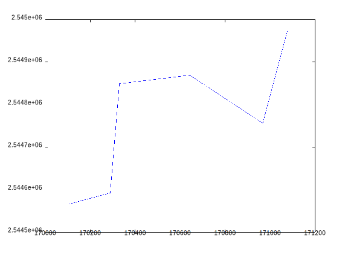
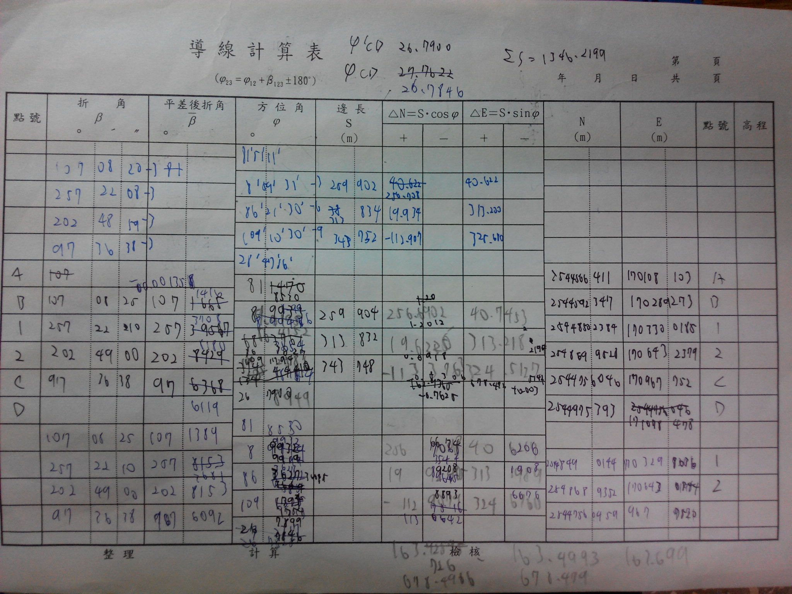
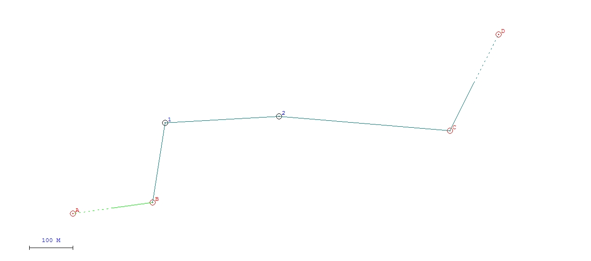
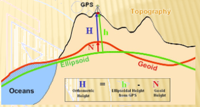
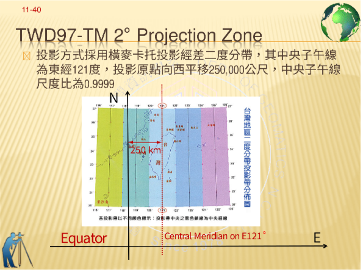

國立成功大學
測量及空間資訊學系
基礎測量學課程指定作業
104學年度下學期
曾義星 編
第十章 導線及控制測量
滿分3分(第4題為額外加分題)
某導線之已知點A, B, C, D之TWD97坐標如下右表，分別於點位B, 1, 2, C上
依序架設全測站儀，觀測後視至前視順鐘向水平角度(Angle to the right) 及水
平距離如下左表：
| 點位
| A
| B
| C
| D
|
| E坐標 (m)
| 170108.103
| 170289.273
| 170967.752
| 171078.478
|
| N坐標 (m)
| 2544566.411
| 2544592.347
| 2544756.046
| 2544975.393
|
| 測站
| B
| 1
| 2
| C
|
| 水平角
| θB= 107°08’25”
| θ1= 257°22’10”
| θ2= 202°49’00”
| θC = 97°36’38”
|
| 水平距離 (m)
| dB1= 259.904
| d12= 313.832
| d2C = 343.748
|
|
請完成下列導線計算⼯作： (2分)
繪製導線簡圖
計算φ AB 及 φ CD 方位角
φ = arctan ΔN / ΔE
φ AB = 81.8530°
φ CD = 26.7900°
計算φ B1, φ 12 及 φ 2C 方位角
φB1 = 8.9932°
φ12 = 86.3627°
φ2C = 109.1794°
計算角度閉合差，並進行角度誤差分配改正
Wa = φCD - φ′CD
φ′CD = φ2C + θC - 180° = 26.791°
Wa = 26.7900° - 26.7846° = 0.0054°
θ′i = θi - 0.00135°
θ′B = 107.1389°
θ′1 = 257.3681°
θ′2 = 202.8153°
φ′i = φi + 0.00135° × n ;
φ′B1 = 8.9919°
φ′12 = 86.3602°
φ′2C = 109.1754°
計算縱距 (Departures) 及橫距 (Latitudes)
ΔN = LAB × cos φAB
ΔE = LAB × sin φAB
NB = NA + ΔN
EB = EA + ΔE
| 點＼縱距｜橫距
| ΔN
| ΔE
|
| B1
| 256.6674
| 40.6217
|
| 12
| 19.9241
| 313.1989
|
| 2C
| -112.9079
| 324.6760
|
計算縱距及橫距閉合差，並進行縱距及橫距誤差分配改正
WE = ΔE - ( En - E1 ) = 678.4966 - 678.479 = 0.0176
WN = ΔN - ( Nn - N1 ) = 163.7260 - 163.699 = 0.0270
平差後的縱距橫距
| 點
| ΔN
| ΔE
|
| B1
| 256.7147
| 40.6207
|
| 12
| 19.9300
| 313.2079
|
| 2C
| -112.9138
| 324.6850
|
計算導線總長及閉合比數（或導線相對精度）
WT = √( WE2 + WN2 ) = 0.03223
ΣS = 1346.220
P = WT / ΣS = 0.00002394
計算未知點位1及2之坐標
1 = ( 2544849.0617 , 170329.8937 )
2 = ( 2544868.9917 , 170643.1016 )
填導線計算表

承上題，請以國土測繪中心導線計算軟體計算出結果，
並與上題手算的結果比較之。（1分）
我覺得用 matlab 畫的圖怪怪的……，
應該說我算錯了；但不確定是錯哪一個。
國土測繪中心的導線計算軟體
算出來和我手算的結果不同，而且數據差有點多。
可能中間哪裡算錯了沒發現，或是在輸入數據時格式錯誤。

用 國土測繪中心 的軟體畫的圖。
用國土測繪中心的軟體算的點位。
| 點 | N | E
|
| 1 | 2544773.067 | 170318.177
|
|---|
| 2 | 2544787.969 | 170577.654
|
|---|
承上題，若要以最小二乘方法進行該導線計算，
請說明此案例共有幾個觀測量?
幾個未知參數(請列出所有的參數符號)?
幾個多餘觀測量? 請列出所有的觀測方程式，
觀測方程式中除了未知參數用符號表式外，
觀測量及已知點坐標請用數字表示之。（1分）
- 觀測量
- 7 個。
- 未知參數
- 4 個。
- 多餘觀測量
- 3 個。
- 觀測方程式
-
承上題，請用Matlab寫出最小二乘導線計算程式，
並以上述例子計算出未知點位1及2之坐標、
改正數、單位全中誤差，以及點位1及2之誤差橢圓。
（2分）
沒空，之後再說。
可以補交嗎？
第十一章 坐標系統
滿分4分
若某一平面坐標 (x, y) = (345.64, 2378.15) ，
依序經過旋轉 (θ = 135°49′36″) 、 尺度 (S = 1.00045)
及平移 (T<sub>x</sub> , T<sub>y</sub>) = (35.82, 23.21) 轉換後，
得轉換後坐標 (x', y') ，請列出此坐標轉換的線性關係如下式，
其中a, b, c及d參數請以數字表示，並計算轉換後坐標(x', y')。（1分）
某二維直角坐標系統之正形 (conformal) 轉換關係如下式，
請說明此轉換之幾何關係為何，即說明坐標系統之旋轉、
尺度及平移的量及順序為何。 （1分）
先旋轉並縮放，再平移。
- 旋轉
-
θ = arctan a/b = 0.961436 (rad)
- 平移
-
(Tx, Ty) = (12.34, 43.21)
何謂參考橢球體？請問參考橢球體過旋轉軸的縱切面是什麼形狀？
而赤道面的橫切面又是什麼形狀？
請繪圖並加註記說明大地坐標系統與參考橢球體的關係，
以及X, Y, Z坐標軸之定義，
並於圖上標示並說明某一點位在此坐標系統之經緯度 (φ, λ)
及橢球高 h 的定義。（1分）
- 參考橢球體
- 一數學上的理想橢球，近似於大地水準面。
- 縱切面
- 橢圓形。
- 橫切面
- 圓形；因參考橢為 扁橢球 。
- X 軸
- 格林威治零子午圈。
- Y 軸
-
X × Z = Y ；X 與 Z 軸的外積。
- Z 軸
- 自轉軸。

大地座標系統為根據某一參考橢球所定義的座標系。
- h
- 該點離橢球面的最短距離。（且該連線會垂直橢球面。）
- φ
- 該連線延伸與赤道面的交角。
- λ
- 該點所在經度。
若地球原子採用GRS80 Ellipsoid (長半徑a=6378137 m；
短半徑b=6356752 m)，請繪圖說明地心坐標系統
(Geocentric Coordinate System) 之X, Y, Z坐標軸如何定義，
並於圖上標示地理坐標系統(Geographical Coordinate System)
之經緯度 (φ, λ) 及橢球高 h 之定義。
若台北101大樓塔尖之地理坐標為φ=25°02′01″、 λ=121°33′53″ ，
及橢球高 h=385.5m，請計算台北101大樓之地心坐標 (X, Y, Z)。 （1分）
N = 6381963.1291
( X, Y, Z ) = ( 4927221.8563 , -3027066.7331 , 2682611.2565 )
請問現行台灣大地基準(TWD97)是如何決定的？
所採用的國際地球參考框架(ITRF)為何？
請繪圖說明TWD97-2°TM投影坐標系統之投影帶寬、
中央經線、及E, N坐標軸之定義。(1分)
- 在台灣八處觀測 GPS ，得到八個 WGS84 座標。
- 與 WGS84 同。
- 
國內現行之高程控制系統的中英文名稱為何?
此系統的參考依據 (或稱水準原點) 為何?
此系統中所建置之高程控制點的高程公告值，屬正高或是橢球高?
無論是哪一種請繪圖並加註文字解釋此高程的意義。 *(1分)*
- 本國高程控制系統
- 台灣高程基準， Taiwan Virtical Datum 2001 。
- 水準原點
- 基隆平均海水面。
- 高程公告
- 正高。
 正高為到大地水準面的高度。
正高為到大地水準面的高度。
請繪圖並加註文字說明正高 (Orthometric Height)、
橢球高 (Ellipsoid Height) 及
大地基準面高 (Geoid Height) 之意義，
並以數學式說明這三者之關係。
橢球高 = 正高 + 大地基準面高
## 第十章 導線及控制測量 ##
*滿分3分(第4題為額外加分題)*
1. 某導線之已知點A, B, C, D之TWD97坐標如下右表，分別於點位B, 1, 2, C上
依序架設全測站儀，觀測後視至前視順鐘向水平角度(Angle to the right) 及水
平距離如下左表：
| 點位
| A
| B
| C
| D
|
| E坐標 (m)
| 170108.103
| 170289.273
| 170967.752
| 171078.478
|
| N坐標 (m)
| 2544566.411
| 2544592.347
| 2544756.046
| 2544975.393
|
| 測站
| B
| 1
| 2
| C
|
| 水平角
| θB= 107°08’25”
| θ1= 257°22’10”
| θ2= 202°49’00”
| θC = 97°36’38”
|
| 水平距離 (m)
| dB1= 259.904
| d12= 313.832
| d2C = 343.748
|
|
請完成下列導線計算⼯作： (2分)
1. 繪製導線簡圖

2. 計算φ AB 及 φ CD 方位角
φ = arctan ΔN / ΔE
φ AB = 81.8530°
φ CD = 26.7900°
3. 計算φ B1, φ 12 及 φ 2C 方位角
φB1 = 8.9932°
φ12 = 86.3627°
φ2C = 109.1794°
4. 計算角度閉合差，並進行角度誤差分配改正
Wa = φCD - φ′CD
φ′CD = φ2C + θC - 180° = 26.791°
Wa = 26.7900° - 26.7846° = 0.0054°
θ′i = θi - 0.00135°
θ′B = 107.1389°
θ′1 = 257.3681°
θ′2 = 202.8153°
φ′i = φi + 0.00135° × n ;
φ′B1 = 8.9919°
φ′12 = 86.3602°
φ′2C = 109.1754°
5. 計算縱距 (Departures) 及橫距 (Latitudes)
ΔN = LAB × cos φAB
ΔE = LAB × sin φAB
NB = NA + ΔN
EB = EA + ΔE
| 點＼縱距｜橫距
| ΔN
| ΔE
|
| B1
| 256.6674
| 40.6217
|
| 12
| 19.9241
| 313.1989
|
| 2C
| -112.9079
| 324.6760
|
6. 計算縱距及橫距閉合差，並進行縱距及橫距誤差分配改正
WE = ΔE - ( En - E1 ) = 678.4966 - 678.479 = 0.0176
WN = ΔN - ( Nn - N1 ) = 163.7260 - 163.699 = 0.0270
平差後的縱距橫距
| 點
| ΔN
| ΔE
|
| B1
| 256.7147
| 40.6207
|
| 12
| 19.9300
| 313.2079
|
| 2C
| -112.9138
| 324.6850
|
7. 計算導線總長及閉合比數（或導線相對精度）
WT = &sqrt;( WE2 + WN2 ) = 0.03223
ΣS = 1346.220
P = WT / ΣS = 0.00002394
8. 計算未知點位1及2之坐標
1 = ( 2544849.0617 , 179329.8937 )
2 = ( 2544868.9917 , 179643.1016 )
9. 填導線計算表

2. 承上題，請以國土測繪中心導線計算軟體計算出結果，
並與上題手算的結果比較之。（1分）
我覺得用 matlab 畫的圖怪怪的……，
應該說我算錯了；但不確定是錯哪一個。
[國土測繪中心的導線計算軟體](https://www.nlsc.gov.tw/Home/MakePage/275?level=275)
算出來和我手算的結果不同，而且數據差有點多。
可能中間哪裡算錯了沒發現，或是在輸入數據時格式錯誤。
* 
* 用 _國土測繪中心_ 的軟體畫的圖。
用國土測繪中心的軟體算的點位。
| 點 | N | E
|
| 1 | 2544773.067 | 170318.177
|
|---|
| 2 | 2544787.969 | 170577.654
|
|---|
3. 承上題，若要以最小二乘方法進行該導線計算，
請說明此案例共有幾個觀測量?
幾個未知參數(請列出所有的參數符號)?
幾個多餘觀測量? 請列出所有的觀測方程式，
觀測方程式中除了未知參數用符號表式外，
觀測量及已知點坐標請用數字表示之。（1分）
觀測量
: 7 個。
未知參數
: 4 個。
多餘觀測量
: 3 個。
觀測方程式
:
.EQ
259.904 = sqrt{ ( 170289.273 - E sub 1 ) sup 2
+ ( 2544592.347 - N sub 1 ) sup 2 }
.EN
.EQ
313.832 = sqrt{ ( E sub 1 - E sub 2 ) sup 2
+ ( N sub 1 - N sub 2 ) sup 2 }
.EN
.EQ
343.748 = sqrt{ ( E sub 2 - 170967.752 ) sup 2
+ ( N sub 2 - 2544975.393 ) sup 2 }
.EN
.EQ
107\(de08\(fm25\(sd = tan sup -1 ({ E sub 1 - 170289.273 }
over { N sub 1 - 2544592.347 })
- tan sup -1 ({ 170108.103 - 170289.273 }
over { 2544566.411 - 2544592.347 })
.EN
.EQ
257\(de22\(fm10\(sd = tan sup -1 ({ E sub 2 - E sub 1 }
over{ N sub 2 - N sub 1 })
- tan sup -1 ({ 170289.273 - E sub 1 }
over{ 2544592.347 - N sub 1 })
.EN
.EQ
202\(de49\(fm = tan sup -1 ({ 170967.752 - E sub 2 }
over{ 2544975.393 - N sub 2 })
- tan sup -1 ({ E sub 1 - E sub 2 }
over{ N sub 1 - N sub 2 })
.EN
.EQ
97\(de36\(fm38\(sd = tan sup -1 ({ 171078.478 - 170967.752 }
over{ 2544975.393 - 2544975.393 })
- tan sup -1 ({ E sub 2 - 170967.752 }
over{ N sub 2 - 2544975.393 })
.EN
4. 承上題，請用Matlab寫出最小二乘導線計算程式，
並以上述例子計算出未知點位1及2之坐標、
改正數、單位全中誤差，以及點位1及2之誤差橢圓。
（2分）
沒時間了……；我可以補交嗎？
## 第十一章 坐標系統 ##
*滿分4分*
1. 若某一平面坐標 `(x, y) = (345.64, 2378.15)` ，
依序經過旋轉 `(θ = 135°49′36″)` 、 尺度 `(S = 1.00045)`
及平移 `(Tx , Ty) = (35.82, 23.21)` 轉換後，
得轉換後坐標 `(x', y')` ，請列出此坐標轉換的線性關係如下式，
其中a, b, c及d參數請以數字表示，並計算轉換後坐標(x', y')。（1分）
2. 某二維直角坐標系統之正形 (conformal) 轉換關係如下式，
請說明此轉換之幾何關係為何，即說明坐標系統之旋轉、
尺度及平移的量及順序為何。 （1分）
先旋轉並縮放，再平移。
- 旋轉： `θ = arctan a/b = 0.961436 (rad) `
- 平移： (Tx, Ty) = (12.34, 43.21)
3. 何謂參考橢球體？請問參考橢球體過旋轉軸的縱切面是什麼形狀？
而赤道面的橫切面又是什麼形狀？
請繪圖並加註記說明大地坐標系統與參考橢球體的關係，
以及X, Y, Z坐標軸之定義，
並於圖上標示並說明某一點位在此坐標系統之經緯度 (φ, λ)
及橢球高 h 的定義。（1分）
- 參考橢球體：一數學上的理想橢球，近似於大地水準面。
- 縱切面：橢圓形。
- 橫切面：圓形；因參考橢為 *扁橢球* 。
****
* X 軸：格林威治零子午圈。
* Y 軸： `X × Z = Y` ；X 與 Z 軸的外積。
* Z 軸：自轉軸。
****
+ 
+ 大地座標系統為根據某一參考橢球所定義的座標系。
****
- h : 該點離橢球面的最短距離。（且該連線會垂直橢球面。）
- φ : 該連線延伸與赤道面的交角。
- λ : 該點所在經度。
4. 若地球原子採用GRS80 Ellipsoid (長半徑a=6378137 m；
短半徑b=6356752 m)，請繪圖說明地心坐標系統
(Geocentric Coordinate System) 之X, Y, Z坐標軸如何定義，
並於圖上標示地理坐標系統(Geographical Coordinate System)
之經緯度 (φ, λ) 及橢球高 h 之定義。
若台北101大樓塔尖之地理坐標為φ=25°02′01″、 λ=121°33′53″ ，
及橢球高 h=385.5m，請計算台北101大樓之地心坐標 (X, Y, Z)。 *（1分）*
N = 6381963.1291
( X, Y, Z ) = ( 4927221.8563 , -3027066.7331 , 2682611.2565 )
5. 請問現行台灣大地基準(TWD97)是如何決定的？
所採用的國際地球參考框架(ITRF)為何？
請繪圖說明TWD97-2°TM投影坐標系統之投影帶寬、
中央經線、及E, N坐標軸之定義。(1分)
1. 在台灣八處觀測 GPS ，得到八個 WGS84 座標。
2. 與 WGS84 同。
3. 
6. 國內現行之高程控制系統的中英文名稱為何?
此系統的參考依據 (或稱水準原點) 為何?
此系統中所建置之高程控制點的高程公告值，屬正高或是橢球高?
無論是哪一種請繪圖並加註文字解釋此高程的意義。 *(1分)*
- 本國高程控制系統： 台灣高程基準， *Taiwan Virtical Datum 2001* 。
- 水準原點：基隆平均海水面。
- 高程公告：正高。
****
+ 
+ 正高為到大地水準面的高度。
7. 請繪圖並加註文字說明正高 (Orthometric Height)、
橢球高 (Ellipsoid Height) 及
大地基準面高 (Geoid Height) 之意義，
並以數學式說明這三者之關係。
- 
- 橢球高 = 正高 + 大地基準面高
## 第十二章 全球定位系統
滿分3分
1.
GPS衛星傳送兩種訊號L1及L2，而其載運的電碼(codes)又有所謂的C/A
code及P code，請描述訊號與電碼間的關係。若所使用的GPS接收儀為單
頻接收儀，代表此接收儀只能收到哪些訊號及電碼？(1分)
2.
何謂GPS虛擬距離定位法？請列出虛擬距離定位原理之觀測方程式，並說
明此觀測方程式所有符號的意義，指出哪些符號代表觀測量？哪些為未知
數？哪些為常數？哪些為已知量（並說明這些已知量是根據何種資訊計算而
得）？此觀測方程式屬線性還是非線性函數？若某GPS接收儀於某一時刻
收到10顆衛星訊號，可列出幾個觀測方程式？而此解算情形又具有多少多
餘觀測數？(1分)
3.
依據虛擬距離定位原理，請列平差計算式說明如何計算得點位坐標，及未知
參數精度估計式。從所列的未知參數精度估計式中，說明如何計算得點位精
度因子(PDOP)？ 並說明PDOP與GPS某一時刻接收到之衛星顆數及其分佈
幾何有何關係？若平差所得的單位權中誤差¾ 0=±6.8m，而計算得
b
PDOP=3.2時，則可估計其定位精度為何？(1分)
4.
何謂總和(Total)的使用者等效距離誤差(User Equivalent Range Error,
UERE)？又何謂定位精度因子(Positional Dilution of Precision, PDOP)？
PDOP與GPS某一時刻接收到之衛星顆數及其分佈幾何有何關係？PDOP值
與定位精度的關係為何？若Total UERE為±7.9m，當PDOP=2.5時，則可估
計其定位精度為何？(1分)
5.
以地球大氣層的影響而言，會使得GPS衛星訊號化算得之距離 (range) 觀測
量含有哪些主要的系統誤差？各項誤差影響量大約為何？哪一項系統誤差可
透過雙頻訊號組合或計算方式解算或削減其影響量？（1分）
6.
何謂GPS星曆(ephemeris)？星曆中最主要是包含什麼資訊？廣播星曆多久
會更新一次？請說明星曆的用途為何。（1分）
�第十三章 衛星定位測量
滿分4分 (第6(2)題為額外加分題)
1. 請說明為何GPS差分定位(Differential GPS, DGPS)可以將定位精度提升到公
尺級？DGPS定位中所謂的基站(base station)與測站之意義為何？DGPS的
差分方式有哪兩種？請說明這兩種差分方式的定位原理。(1分)
2.
GPS控制測量為達到公分級的相對定位(Relative Positioning)精度，需採用
何種觀測量的差分(differencing)來達到精確定位的目的？在此所謂「差
分」的意思為何？差分有所謂的一次差分(Single Differencing)、二次差分
(Double Differencing)、及三次差分(Triple Differencing)之觀測量組合方
法，請繪圖輔以文字說明這些差分方法之概念。（1分）
3.
請繪圖說明GPS二次差分(Double Differencing)相對定位之概念，二次差分
主要可消除或減低哪些系統誤差？若採用載波相位移位(Carrier-phase Shift)
觀測量之二次差分，所得之觀測方程式如下，請說明此數學式所有符號的意
思。若某一時刻兩個測站同時收到相同6顆衛星的訊號，可獲得多少個獨立
的二次差分觀測量？（1分）
4.
何謂GPS靜態測量(Static GPS Survey)？此種測量採用何種GPS定位方法
(請簡單描述方法原理及定位精度)？假設有兩個地面點位A及B點，其中A點
為已知點，具有WGS84坐標，B點則為未知點。若應用兩部GPS 接收儀進
行靜態測量，觀測計算得這兩個點位間之基線(Baseline)，請說明此基線的
定義（請繪圖並以數學式描述之）。若想求得這兩點間之三度空間距離、
平面距離及橢球高差，應如何從基線換算。（1分）
�A 5. 何謂獨立基線(Independent Baseline)？某測區共有7個點位，如下圖，其
D
E
B
C
F
G
A
中點G為控制點，擬應用GPS靜態測量進行觀測，若有5部GPS接收儀，共
執行兩次觀測任務，第一次任務的觀測站為A、B、C、D及G點，第二次任
務的觀測站為C、D 、E、F及G點。結合兩次觀測任務的數據，一共可以成
立多少個可能的基線？而這其中應該只有多少個獨立基線(Independent
Baseline)？若將非獨立基線納入GPS基線網形平差，會有何不良的影
響？實務上如何選擇獨立基線？請描繪出任一合適的獨立基線組合，以實線
及虛線區別不同任務的獨立基線。(1分)
6. 某GPS靜態測量網形如下圖，觀測得之獨立基線如下表：(2分)
1.
請針對迴圈 (loop) ACD、BCD、及ACBD，計算X, Y及Z分量
(component) 之迴圈閉合差(loop misclosure)，以及迴圈閉合差長度及百萬分
率(ppm ratio)。
若A及B點為已知點，A點坐標為(8086.032,
-4642712.847,
4360439.083)，B點坐標為(5163.031, -4646797.947, 4351917.483)，
如今欲使用此觀測數據進行GPS靜態基線網形平差，以解算B及C點坐
標。請問列出所有觀測方程式（式中除了改正數及未知參數外皆須帶入
數值）。
2.
Baseline
AC
CD
DA
BC
BD
X (m)
-6567.231
10527.785
-3960.522
-3644.223
6883.550
Y (m)
-5686.293
-994.928
6681.247
-1601.216
-2596.161
Z (m)
-6322.392
-956.655
7279.015
2199.255
1242.576
�第十四章 製圖測量
滿分3分
1.
地圖比例尺的定義為何？請以測製1/1000及1/5000地形圖為例，同樣在圖
紙上10 cm的長度，所代表的地面距離各為何？而同樣10x10 cm2的圖紙區
域，所涵蓋的地面面積各為何？若從地圖測繪的觀點，設定了所要測繪的地
圖比例尺時，隱含有哪些重要的含意？請舉例說明這些含義如何影響其測繪
作業的要求或規格。 (1分)
2.
我國所發行之國家基本地形圖(National Basic Topographic Maps)中有哪些
比例尺的規格？其中最小及最大的比例尺為何？這幾種比例尺規格的圖幅分
幅方式為何？此種圖幅經台灣2°TM投影後之圖幅形狀為何？若某一1/5000
基本圖圖幅編碼為9723-III-063，請說明這些數字所代表的意義。(1分)
3.
若使用全測站儀進行地形圖的細部測量(測量地物點的平面坐標)，請詳細描
述其測量作業程序及計算方法，包括所需圖根點數量、儀器架設位置、觀
測哪些量、觀測程序及計算公式等。(1分)
4.
與一般光波測距式全測站儀比較，採用雷射全測站儀進行地形圖的細部測量
的主要優點為何？若使用雷射全測站儀進行地形圖的細部測量，宜採用何種
測量方法為佳？請敘述此方法的測量程序及計算方法，並描述如何估計觀測
點位之精度。(1分)
5.
我國所發行之國家基本地形圖中，包含十萬分之一、五萬分之一、及五千分
之一，三種主要的比例尺規格，請問這三種規格的圖幅分幅方式為何？此
種圖幅經台灣2°TM投影後之圖幅形狀為何？若某一1/5000基本圖圖幅編碼
為9523-II-026，請說明這些數字所代表的意義。(1分)
�6.
請於下面等高線圖中圈出所有小山頭的位置，並依英文字母順序從高至低標
註所有的山頭。若此區域下雨，請以實線標註水流可能走的路線(須標註水
流的方向)，並以虛線標註分水線(山脊線)。(1分)
�第十五章 ⼯程測量
滿分2分
1. 擬應用一部水準儀放樣某⼯地施⼯點位高程為10.000m之位置，若架設此水
準儀後視某已知高程點位之水準尺，已知高程點位之高程為9.123m，後視水
準尺讀數為1.876m，請問若要使前視水準尺底端為放樣高程，則前視水準尺
之讀數應為若干? (1分)
2. 設有三個點位A、B及C，三點之間皆可通視，其三維坐標如下表：(1分)
1.
2.
點名
A
B
C
3.
若C點樁位遺失，擬由A及B樁位點再行測設(放樣)C點樁位，請說明測
設的方法、步驟、應使用的儀器、及應計算的數據
同樣，若擬由A或B樁位點重新測設(放樣)原C點高程位置，請說明測設
的方法、步驟、應使用的儀器、及應計算的數據
E (m)
175001.24
175080.62
174030.86
N (m)
2540000.91
2540012.74
2540090.18
H (m)
90.234
95.351
92.892
承上題，若點A及B為直線隧道兩端之樁位，兩點之間無法通視，假設隧
道⼯程已從A點挖掘超過隧道中點，如今擬進行隧道中間點樁位之平面
位置及高程放樣，請說明應如何進行此放樣⼯作，並計算出放樣⼯作所
需要的數據。(1分)
�第十六章 地籍測量
G
F
D
E
N
C
B
A
滿分3分
1. 一筆土地之經界線依法應經過什麼程序來確定？請簡要說明此程序如何進
行，而其最後成果為何？土地經界一旦確定後如何進行測量？請說明測量的
程序及方法，而其測量成果為何？(1分)
2. 某六邊形土地ABCDFG，其界址點坐標如下表，請計算其面積，若坐標值
之中誤差σ E = σN = ±0.01 cm，請以誤差傳播估計土地面積之中誤差。(1分)
界址點
A
B
C
D
F
G
E (m)
175001.23
175102.23
175753.45
175755.12
175567.34
175290.02
N (m)
2540000.67
2539550.87
2539702.00
2540014.94
2540123.54
2540078.89
3. 某筆三角形土地如下圖，其三個界址點位A、B及C之坐標如下表：(1分)
1. 請計算此筆土地之面積?
2. 若欲自C點引分割線交於AB邊線上之D點處，使分割後之左右
兩筆三角形土地面積比ACD: BCD=2:3，則D點坐標應為何？
3. 若由於AB邊面臨道路，因此設定分割線必須經過AB邊的中間
點F，使分割後之左右兩筆土地面積比同樣為2:3，則F及G點坐
標應為何？
界址點
A
B
C
E (m)
175001.23
175298.45
175049.12
N (m)
2540000.67
2540053.87
2540403.94
4. 以數值測量法測得某筆四邊形土地如下圖，其四個界址點位A、B、C及D
之坐標如下表，請計算此筆土地之面積。今擬以等面積分割這筆土地，由於
AB邊面臨道路，因此設定分割線必須經過AB邊的中間點。假設分割線是直
�D 線，與原土地邊界之交點為F、G兩點，如下圖。請求出F、G兩點之坐標
E
N
C
B
A
（列出解法及相關計算式），並敘述如何在現地放樣得這兩點位置。 (1分)
E (m)
N (m)
A
175000.00
2540000.00
B
175102.23
2539550.87
C
175753.45
2539702.00
D
175755.12
2540014.94
界址點
A
B
C
N
E
D
F
G
5. 以數值測量法測得某筆四邊形土地如下圖，其四個界址點位A、B、C及D
之坐標如下表，請計算此筆土地之面積。若欲自A點引分割線將此筆土地等
分為兩筆土地，請問分割點E應設在BC或CD邊? 其坐標應為何？(1分)
界址點
E (m)
N (m)
A
175000.00
2540000.00
B
175102.23
2539550.87
C
175753.45
2539702.00
D
175755.12
2540014.94
�第十七章 交通路線測量
BC
R
滿分3分
如下圖所示，某道路彎道之中心曲線為水平單圓曲線，此曲線
以20m弧長所定義之曲度(Degree of Curve) D = 3，頂點IP之交角 I
= 352025，若曲線起點BC之樁號(里程)為 5k + 521.333，請計算：(1) 圓曲
線之半徑R；(2) BC至IP之距離；(3) BC至EC之曲線弧長及弦長；(4) 曲線
中點M及終點 EC之樁號。 (1分)
1.
2.
請簡要說明克羅梭曲線 (Clothoid curve) 的基本性質。若某段公路之中心曲
線為克羅梭曲線，其前接線曲度D = 6之圓曲線，後接線為曲度D = 2之圓曲
線，則此克羅梭曲線之起點及終點之曲率半徑為何? 若此克羅梭曲線之長度
為100 m，則其曲率變化率 (changing rate of curvature) C之值為何? 最後
請繪出此克羅梭曲線之曲率變化圖。 (1分)
3.
下圖乃某道路平面中心線，BC點左邊為直線，右邊則接水平單圓曲線，單
圓曲線之曲度D = 2 (以20m弧長定義)，若BC點之樁號(里程)為 54k +
514.33，請計算：(1).圓曲線之半徑R；(2).曲線上第一及第二個副點(如圖
上所示)之樁號應為何？(3).若擬於曲線間以偏角法(
Deflection
Angle
Method)測設每20m弧長之副點，請計算測設第一及第二個副點所需之資
料，包括相關之角度與距離。 (1分)
�4.
設某一段道路⼯程需設立豎曲線 (Vertical Curve)，使用的線型為二次拋物
，其中y為高程值，x為豎曲線任一點至其起點之
線
水平長度， L為豎曲線的總水平長度，曲線起點為D，其高程為H D，曲線終
點為E，其高程為HE。曲線後切線坡度為g1，前切線坡度為g2，如下圖所
示。若曲線起點D之里程為5k+123.45，L = 118.04m、HD = 153.256 m、g1
= - 5%且g2 = 3%，請計算：(1分)
4.1. 曲線終點E之里程及高程
4.2. 所有整數里程(20m之倍數) 之里程及高程
4.3. 曲線最低點之里程及高程
5.
若某段公路中心線之豎曲線為二次拋物線
（如上圖），其
中y為高程值，x為豎曲線起點至中心線某點之水平長度，L為豎曲線的總水
平長度。設豎曲線起點為D，起點高程為HD且坡度為g1；終點為E，終點高
程為H E且坡度為g2，如下圖所示。請利用這些已知條件，加上等切線性質
(Equal Tangent Property)條件，說明並推導數學式，將二次拋物線函數之參
數以H D 、g1及g2等已知參數表示之。(1分)
�